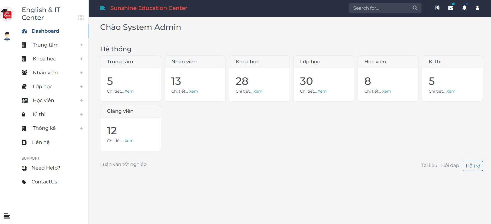

05/2025 - 07/2025English Center Management System with AI Chatbot
AI Chatbot & Full-stack Developer (Team of 2)
Centralized multi-branch management system tracking students, courses, tuition fees, and statistics, integrated with a 24/7 LangChain AI Chatbot.
.NET Framework
LangChain
C#
Python
SQL Server
Bootstrap